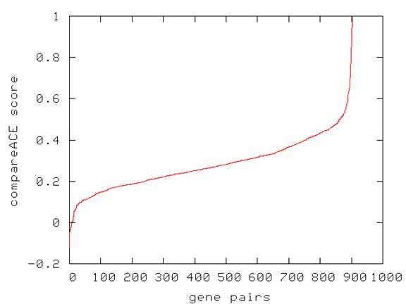

Sequence motif redundancy

The figure shows pairs of genes (x-axis) sorted by their compareACE* score (y-axis). The score is based on the Pearson correlation of the most similar positions in the motif (in case of anti-correlation, reverse complement of the motif is used).
* Hughes, J.D., Estep, P.W., Tavazoie, S. and Church, G.M. (2000) Computational identification of cis-regulatory elements associated with functionally coherent groups of genes in Saccharomyces cerevisiae. J. Molec. Biol. 296: 1205-1214.